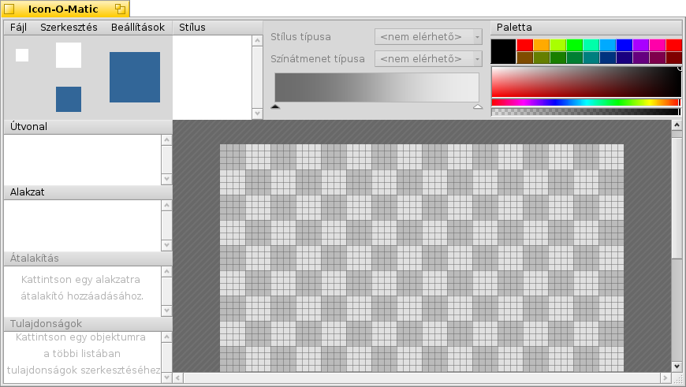

Magyar
Magyar Français
Français Deutsch
Deutsch Italiano
Italiano Русский
Русский Español
Español Svenska
Svenska 日本語
日本語 Українська
Українська 中文 ［中文］
中文 ［中文］ Português
Português Suomi
Suomi Slovenčina
Slovenčina Português (Brazil)
Português (Brazil) English
English| Index |
| BeOS bittérkép és Haiku vektoros ikon összevetése Az ikon jellemző Ikon készítése az Icon-O-Matic használatával Útvonal Formák Stílus Átalakító Ikon mentése Tippek és trükkök |
 Icon-O-Matic
Icon-O-Matic
| Asztalsáv: | ||
| Útvonal: | /boot/system/apps/Icon-O-Matic | |
| Beállítások: | ~/config/settings/Icon-O-Matic |
Mielőtt az Icon-O-Matic használatával foglalkoznánk, előtte néhány mondat a Haiku ikonjairól.
 BeOS bittérkép és Haiku vektoros ikon összevetése
BeOS bittérkép és Haiku vektoros ikon összevetése
A BeOS bittérképes ikonjaival ellentétben a Haiku vektoros ikonokat használ. A Haiku Vector Icon Format (HVIF) a kis méretre és a gyors kirajzolásra lett optimalizálva. Éppen ezért az ikonok nagy része sokkal kisebb, mint a bittérkép vagy az SVG formátumúak esetén. Továbbá a BeOS 8 bites (256 szín) ikonjaival ellentétben a Haiku esetében nincs ilyen korlátozás.
Nézzük meg például a Terminál ikonját:
| Bittérkép | SVG | HVIF |
| 1,024 bájt + 256 bájt | 7,192 bájt | 768 bájt |
Itt érdemes megjegyezni, hogy a BeOS 2 fajta ikont használt, egy 16x16 és egy 32x32 képpont méretűt, hogy megfeleőlen nézzen ki mind Lista nézetben, mint pedig Ikon nézetben.
Erre persze semmi szükség nincs vektoros ikonok használatakor. A vektoros ikonok méretezhetősége is sokkal jobb mint a bittérképeseké. (Megjegyzés: a BeOS csak 16x16 és 32x32 képpont méretű ikonokkal rendelkezett.)
| 16x16 | 32x32 | 64x64 | 128x128 | |
| Bittérkép |  |
 | ||
| Vektor |  |
 |
Az ikon jellemző
Az ikonokat a fájl jellemzőjeként tárolja a rendszer. Ugyanakkor, ez nem azt jelenti, hogy minden fájlnak rendelkezni-e kell ikon jellemzővel, ugyanis például az adatfájlok ikonjait a Nyomkövető a fájltípusok alapján jeleníti meg. Hogy rendszer szinten módosítsuk egy fájltípus ikonját, ahhoz a Fájltípusok beállításait kell használni. Ha csak egy fájlnak akarjuk módosítani az ikonját, akkor használjuk a fájl Fájltípusok kiegészítőjét. További információk a Fájltípusok fejezetben.
Ikon készítése az Icon-O-Matic használatával
Az Icon-O-Matic a Haiku ikonszereksztője, ami képes a készített képet HVIF, SVG vagy PNG formátumba menteni. Az ikon közvetlenül egy fájl jellemzőjeként vagy forrásfájlként is elmenthető. Mivel a program a HVIF formátumra szabott, a működése is erre összpontosul.
A hagyományos vektor-grafikai programokkal ellentétben nem kell foglalkozni a különböző objektumokkal, mint az útvonalakkal, hosszal, színekkel, stb. Az objektumok ("alakzatok") inkább a közös útvonalakból és színekből ("stílusok") állnak össze, és mindegyiknek bizonyos tulajdonságaik is megadhatóak. Az elemek ezen fajta használata a titka a HVIF hatékonyságának. Bár, ez az ikon készítésekor néhány korlátozást eredményez, azért vannak előnyei is.
Például több objektum is módosítható együtt egy útvonal újrahasználásával. Gondoljunk csak egy objektumra és annak árnyékára. A közös útvonaluk módosításakor maga az objektum és az árnyéka is automatikusan módosul.
Az Icon-O-Matic indításakor az alábbi ablakot kapjuk:
Hogy készítsünk egy objektumot, ahhoz szükségünk van alakzatra, útvonalra és stílusra. Ezekből akár többet is készíthetünk az menüben. Minden objektumtípus (Útvonal, Alakzat, Átalakítás, Stílus) rendelkezik egy menüvel amiben többek között néhány parancs is megtalálható. Minden elemnek van több opciója is, melyek a nézetben jelennek meg.
Útvonal
Egy útvonal több pontból áll, melyek vonallal vagy ívvel vannak összekötve. Egy pont hozzáadásakor vagy törlésekor az útvonalnak ki kell lennie jelölve a listában.
Egyszerűen csak kattintsunk a vászonba az első pont megadásához. Miközben megadunk egy pontot, döntsük el, hogy egyenes vonalat hozunk majd létre, vagy ívet: egy egyszerű kattintás egyenes vonalat, míg az egér gombjának lenyomvatartása és az egér mozgatása ívet eredményez. Persze, ezt a későbbiekben is módosíthatjuk.

Hogy az "A"-ból "B"-t kapjunk, ahhoz néhány pontot át kell alakítani szögletes pontból íves pontra. Ekkor tartsuk lenyomva az ALT billentyűt miközben egy ponton kattintunk és elhúzzuk a foggantyút. Ez egy szimmetrikus ívet eredményez: az egyik foggantyú mozgása követi a másikét. Ha a foggantyúkat egymástól függetlenül akarjuk mozgatni, akkor az ALT lenyomásával mozgassuk a foggantyút.
Ugyan ezen a módon válthatunk íves-pontról szögletes pontra, miközben az ALT-ot lenyomva tartjuk.
Egy pont mozgatásához egyszerűen csak kattintsunk rá, és mozgassunk azt. Ha több pontot is ki akarunk választani, akkor tartsuk lenyomva a SHIFT-et és rajzoljunk egy négyzetet. A kielölt pontok piros kerettel vannak jelölve (a szokásos fekete helyett).
Egy pont beszúrásához kattintsunk két pont közti összekötő vonalra.
A kijelölt pontok a DEL lenyomásával törölhetőek vagy bármely ponton kattintva a CTRL lenyomásával törölhető az (csak az az egy).
A küllönféle egér kurzor az alábbi műveleteket jelzi:
| Pont mozgatása | Pont beszúrása | Pont hozzáadása | Pont törlése CTRL |
Szögletes↔Ív ALT |
Pontok kijelölése SHIFT |
Egy pont (vagy kijelölt pontok) helyi menüjében a következőket találjuk:
| ALT A | A jelenlegi útvonal összes pontjának kijelölése. (A vászonon kattintva.) | |
| T | Az (összes kijelölt) pontot egy átalakító dobozva teszi, így azok egyszerre mozgathatóak, méretezhetőek és forgathatóak. Átalakítás után az ENTER leütésével befejezhetjük a műveletet. Ez épp úgy működik, mint az alakzatok esetében, amiről a későbbiekben lesz szó. | |
| A kijelölt pontból kettőt csinál, amik egymáson helyezkednek majd el a vágás után. | ||
| A kijelölt pontok elforgatása 180°-al. Ez csak az íves pontokon használható. | ||
| DEL | A kijelölt pont eltávolítása. |
Útvonal menü
Az menü tartalmaz néhány nyilvánvaló bejegyzést, mint a, a , a vagy az . Ezekhez viszont némi magyarázat szükséges:
| Ha az útvonal nem "zárt" (lásd alább), a vászonon kattintáskor minden esetben egy új pont jön létre a legutóbbihoz kapcsolva. A "Megfordítás" ezzel szembem az első ponthoz kapcsolja az újat. | ||
| Ez hasznos megnyitott SVG képek esetén a felesleges pontok törléséhez. | ||
| ALT R | Az útvonal forgatása. Ez akkor látványos, ha nem zárt útvonalat forgatunk. Tehát, ha az útvonal így néz ki: ⊂, akkor a következőképpen fog fordulni: ⊂ ∩ ⊃ ∪. | |
| ALT SHIFT R | Ugyan az, mint a másik, csak az ellenkező irányba. |
Útvonal tulajdonságai
A az ablak bal alsó részén a jelenleg kijelölt objektum elérhető beállításait tartalmazza. Az útvonalnak kettő szerkeszthető van: és hogy vagy nem.
Alakzat
Az alakzat egy vagy több útvonal és azok stílusának a csoportja, ami megjelenik a vásznon. A csoportosítás az útvonalak és a stílusok előtti jelölőnégyzettel történhet: csak jelöljük ki az alakzatot, és válasszuk ki a kívánt útvonalat és stílust.
Egy alakzat határozza meg, hogy az útvonalat és a stílust hogyan használjuk. Például, az objektum ki van-e töltve vagy nem. Továbbá, az alakzat mozgatható, forgatható vagy átméretezhető anélkül, hogy egy útvonalhoz is hozzá nyúlnánk. Így, egy egyszerű útvonalat újra használhatunk és kaphatunk különféle, de egymáshoz kapcsolódó alakzatot.

Ha egy alakzat ki van jelölve, akkor egy téglalap jelenik meg körülötte. Attól függően, hogy mely részén fogjuk meg, az alakzatot mozgathatjuk, átméretezhetjük vagy körbeforgathatjuk a középpontja körül, amit akár mozgathatunk is. A SHIFT lenyomva tartásával mozgatáskor az irányt rögzíthetjük, forgatáskor pedig 45°-ban korlátozhatjuk azt illetve a méretarányt is megtarthatjuk méretezéskor. Az egér kurzor szintén jelzi a jelenlegi műveletet:
| Mozgatás | Átméretezés | Forgatás | Forgatási pont mozgatása |
Az alakzatok egymás felett helyezkednek el, mindegyik egy külön rétegen. Hogy változtassunk a régetek sorrendjén, a listában a régetegeket másik pozícióba kell húzni.
Alakzat menü
Az menü az alábbi lehetőségeket nyújtja: és . Továbbá:
| Az alakzaton alkalmazott összes mozgatás, méretezés és forgatás visszavonása. | ||
| Egy alakzat átalakításakor a hozzá rendelt útvonal(ak) eredeti pozíciója megmarad. Ha több alakzat is használja ugyan azt az útvonalat, akkor válasszuk a menüt, hogy pontosan megadjuk a pontokat. Ha nem, akkor az "Átalakítás rögzítése" a jelenlegi alakzathoz rendelt útvonal(ak) átalakításaira lesz érvényes. Egy esetleges "Átalakítás visszaállítása" erre az új állapotra történik majd. |
Alakzat tulajdonságai
A és a menün kívül még az alábbi is a rendelkezésünkre áll:
| Minimális részletességi szint | ||
| Maximális részletességi szint |
Részletességi szint
| 16x16 | 32x32 | 64x64 |
Ahogy látjuk, nincsenek számok a BeVexed 16 képpontos verziójában.
Ez az alakzat "Részletességi szint" (RSz) beállításának köszönhető.
A részletességi szinttel szabályozható az alakzatok megjelenése a méret függvényében. Így azokat a részleteket kihagyhatjuk, melyek csak nagy méretű ikon esetén jelennek meg jól.
Tehát, hogy is működik: az 1.0 RSz 64 képpontos ikon méretére lett meghatározva. Hogy megkapjuk az ikon méretének megfelelő RSz-t, egyszerűen csak el kell osztani azt 64-el. Például 16 képpontos ikon mérete esetében az RSz 16/64 = 0.25. Egy alakzat nem lesz látható a alatt és a felett.
Ha beállítjuk egy alakzat értékét 0.0-ra és a értékét 0.5-re, akkor az azt jelenti, hogy az alakzat csak a maximum 32 képpont méretű ikon esetében jelenik meg. Ha a 32 képpontos ikont is ki akarjuk zárni, akkor az értéket 0.5-től kisebbre kell állítani, például 0.49-re.
Az RSz nem csak kizárásra használható, hanem például ha szükséges, akkor a méret függvényében változhatnak a szélességek is. Ekkor csak meg kell kettőzni az alakzatot, elvégezni a szükséges módosításokat, majd mind a két esetben az RSz-t úgy megadni, hogy hol az egy egyik, hogy a másik jelenjen meg. Ekkor akaratlanul is bekövetkezhet egy kis zavart, ha az alakzatok RSz-ei között átfedés van. Ez azt eredményezi, hogy néhány méret esetén mind a kettő látható...
Például, ha az első alakzat csak 48-tól kisebb képpont méretű ikon esetében jelenik meg, akkor a második 48 képpont felett (RSz: 48/64 = 0.75):
| Helyes | Hibás! | ||||
| Alakzat 1 | Min RSz | 0.00 | Min RSz | 0.00 | |
| Max RSz | 0.74 | Max RSz | 0.75 | ||
| Alakzat 2 | Min RSz | 0.75 | Min RSz | 0.75 | |
| Max RSz | 4.00 | Max RSz | 4.00 | ||
Stílus
A stílus lehet egyszerű szín, vagy átmenet.
A előre megadott színein felül egyénit is "kikeverhetünk". Az alsó csuszkával pedig az alfa-csatornát tudjuk megadni (áttetszőség).
Gyorsan készíthetünk egy új stílust ha kikeverünk egy színt, és a stílusok listájába dobjuk.
Ha egy átmenetet akarunk készíteni, akkor meg kell adni annak típusát (, , , ) és a kezdő és záró színt. Ezt megtehetjük, ha egy színt az átmenet alatti nyílra (színre) húzunk.
Természetesen, ezek a színek tetszés szerint mozgathatóak is. További színeket hozzáadhatunk, ehhez csak duplán kell kattintani az átmeneten. A DEL lenyomásával pedig törölhető a kijelölt szín.
Az átmenetet mozgathatjuk, átméretezhetjük és forgathatjuk az átmenetet jelképező dobozzal a vásznon addig, amíg el nem érjük a megfelelő eredményt. Ezek a műveletek épp úgy működnek, mint az alakzatok esetében.
Stílus menü
A menü a szokásos elemeket tartalmazza: , , és .
Stílus tulajdonságai
A az egyetlen .
Átalakító
Egy alakzatnak lehetnek átalakítói, melyek módosítját a megjelenését. Ezekkel finom változtatásokat hajthatunk végre.
Átalakító menüje
| Egy körvonalat ad az alakzathoz. | ||
| Kiemeli az útvonalat az alakzat sílussal való kitöltése helyett. |
Az átalakítók függvényében változik a tulajdonságok listája.
Átalakító tulajdonságai
Az átalakítóhoz a és a beállításain túl az alábbiakat is módosíthatjuk a között:
| Kihúzás esetén. A vonalvégek megadása: , vagy . | ||
| Körvonal esetén. A körvonal az útvonalon belül vagy azon kívül helyezkedik el. | ||
| A pontok vonalhoz kapcsolódása: , vagy . | ||
| Csak ha a fenti "Süveg"-ként vannak megadva. Ez a beállítás befolyásolja a szüveg megjelenését a csatlakozási pontok esetén. |
Ikon mentése
A program ablaka rendelkezik a hagyományos menüvel: , , . Ezek elég egyértelműek, így most csak a mentésről lesz szó.
A egy speciális Icon-O-Matic formátumba menti el az ikont néhány további információval, mint például útvonal, alakzat illetve stílus nevek. Ezeket az információkat helytakarékosság miatt eltávolítjuk az ikon mentésekor. Így ez egy remek ötlet, hogy ezekről az adatokról készüljön egy biztonsági másolat, mivel a későbbiekben már csak az objektumok neveit (például "<path>/<shape>/<style>") látjuk majd, aminek az értelmezése elég fárasztó lehet.
A hasonló mentés panelt nyit meg, de itt már a formátum választó menü is elérhető:
| HVIF | Haiku Vector Icon Format | |
| HVIF RDef | Programozók által használt forrásfájl | |
| HVIF forráskód | Programozók által használt forráskód | |
| SVG | Mentés SVG képként | |
| PNG összeállítás | Mentés 64 képpont méretű PNG képként | |
| PNG YxY | Mentés 16, 32 és 64 képpont méretű PNG képként | |
| BEOS:ICON jellemző | Mentés közvetlenül egy kiválasztott fájl ikon jellemzőjeként | |
| META:ICON jellemző | Csatolás közvetlenül egy kiválasztott fájlhoz kiegészítő (meta) adatként |
Tippek és trükkök
Néhány dolgot észbe kell tartani a program használatakor, illetve akad néhány jó ötlet is a használathoz:
Az Icon Guidelines (leírás az ikonokhoz) tartalmazza a Haiku alatt használt ikonok karakterisztikáját, mint például a színeket, vagy az árnyékokat.
Próbáljuk meg minimalizálni a használt útvonalak számát, ugyanis ezek befolyásolják a fájl méretét. Ha lehet, használjuk újra az útvonalakat és inkább használjunk módosított alakzatokat azok átalakítása helyet. Az átmenetek okos használatával szintén takaríthatunk meg helyet.
Ha csak lehetséges, használjuk a Rácshoz illesztést a menüből az útvonalak szerkesztésekor. Ha az útvonal pontjai a 64x64-es rácshoz illeszkednek, akkor azzal a méret csökkenthető. Akkor is jobb megjelenést kapunk, ha a pontokat a képpontok határához igazítjuk. Például fontos, hogy a jelentősebb körvonalakat egymáshoz igazítsuk a 16x16-os rácshoz.
Ellenőrizzük le az előnézeti mezőben, hogy helyesen jelenik-e meg az ikon 16x16-os méretben. Ajánlott a Részletességi szint használata, amiről az Alakzat részben volt szó.
A karakterek ikonhoz adásának van egy egyszerű módja (ugyanis a program nem tartalmaz túl sok eszközt a szerkesztéshez). Csak írjuk meg a szöveget egy szövegszerkesztőben, például a StyledEdit-ben, állítsuk be a megfelelő betűtípust és stílust, majd dobjuk be az Icon-O-Matic ablakba, vagy használjuk a vágólapot. Ebből a program létrehozza az alakzatot és az útvonalakat.
Ha egy vagy több útvonalat rendelünk egy alakzathoz, akkor azok egymás területeit is átfedik. Ha egy útvonal egy másikon belül helyezkedik el, akkor az egy lyukat eredményez az alakzatban.
A vászon kicsinyíthető vagy nagyítható az egér görgőjével, illetve mozgatható a középső gombbal vagy a bal egérgombbal a SZÓKÖZ lenyomva tartása közben.